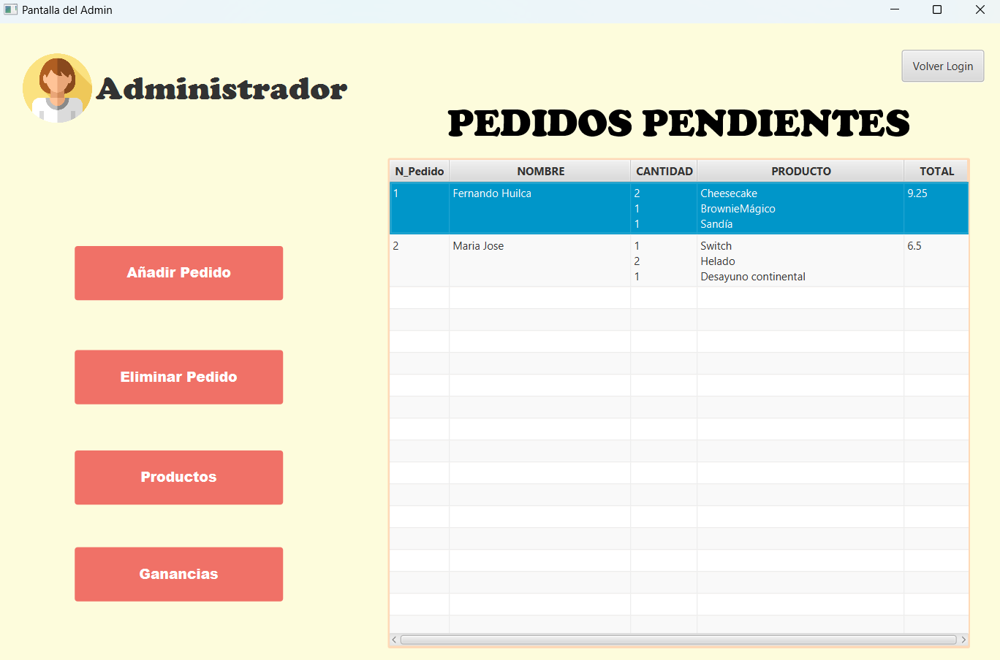
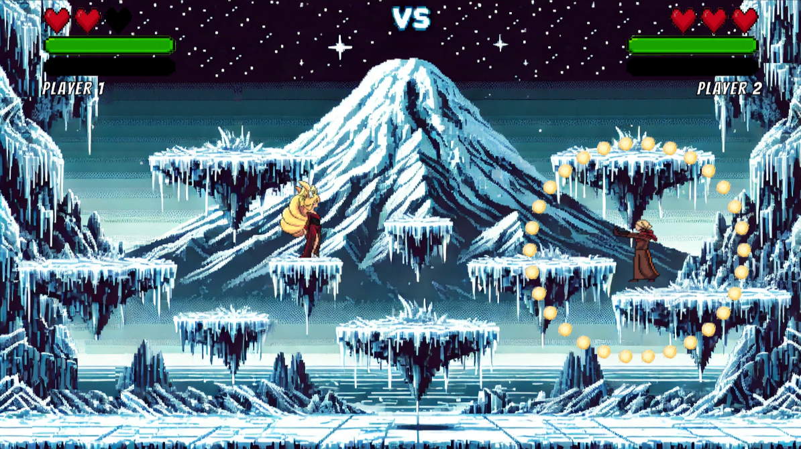
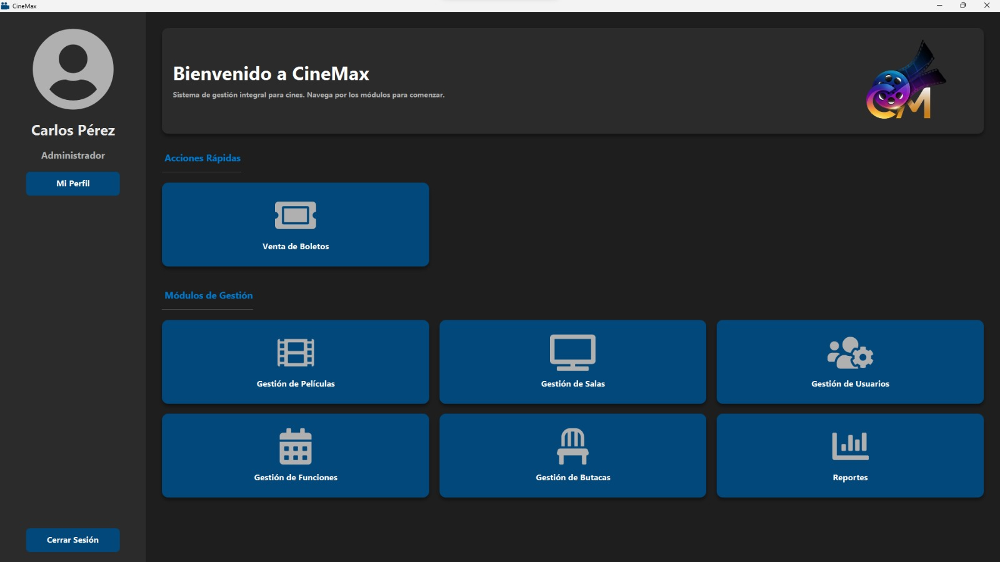
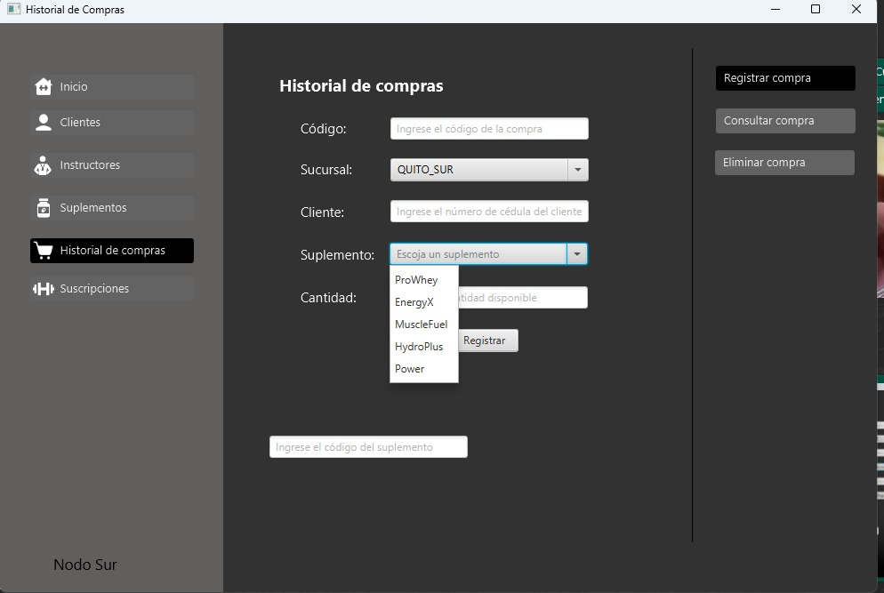

Portfolio
Restaurant Management System – PoliEats (2024)

Description: Desktop application designed for managing the restaurant
or cafeteria at Escuela Politécnica Nacional. It facilitates order registration
and efficient inventory control of products.
Technologies Used: Java
Link: GitHub Repository
Interactive Entertainment Application – Knockout Game (2024)

Description: 2D fighting game for two players, allowing 1v1 battles in various arenas.
Available as a desktop application or web version, hosted on the Itch.io platform.
Technologies Used: Unity, C#, SQLite
Link: GitHub Repository
Cinema Management System – CineMax (2025)

Description: Desktop application developed for the administrative and operational
management of a cinema. Includes modules for employee management, theaters and showtimes, ticket sales, electronic invoicing, and sales report generation.
Technologies Used: Java, PostgreSQL, Maven, Firebase Storage
Link: GitHub Repository
Gym Management System - FITEC (2025)

Description: Desktop application for a gym network with two branches in Quito
(North and South), implementing a distributed database to manage essential information such
as clients, instructors, subscriptions, and dietary supplements.
Technologies Used: Java, SQL Server
Link: GitHub Repository